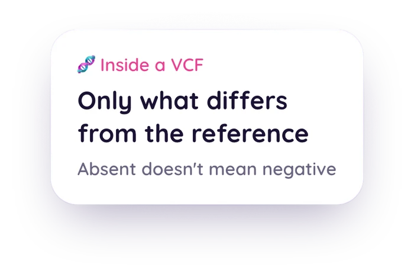

How to Read the VCF File From Your Genome Test
If you've done whole genome or exome sequencing through a service like Nebula Genomics, Dante Labs, or Sequencing.com, your download doesn't look like a 23andMe file. This guide covers what a VCF actually contains, why the reference build matters, the difference between a variant-only VCF and a gVCF, and why a missing variant isn't the same as a negative result.

Educational content about how sequencing files work, not medical or genetic-counseling advice. For anything about your own results, talk to a doctor or a certified genetic counselor.
Medical Disclaimer
This article is for educational and informational purposes only and does not constitute medical or genetic-counseling advice. It explains the VCF file format and what it can and can't show. It is not a substitute for consultation with a doctor or a certified genetic counselor, especially if you're weighing a personal or family health decision. If you have questions about a specific result, please talk to a qualified professional.
Quick Answer: What Am I Looking At?
A VCF (Variant Call Format) file is a plain text file, one line per position where your sequence differs from a reference genome.[1] A few things worth knowing before you open one:
- It's not your whole genome printed out. Positions that match the reference usually aren't listed at all.
- It's tagged to a specific reference build, GRCh37 or GRCh38, which affects how positions are numbered.
- A missing position is not automatically a "clear" result. It just means nothing was reported there.
A VCF is a different animal from the flat 23andMe or AncestryDNA-style file covered in the first post in this series. Instead of a fixed list of a few hundred thousand array positions, a VCF is built from sequencing, reading your DNA more broadly and reporting the specific spots where it differs from a standard reference. It looks denser and more technical on the page, but the underlying idea is still just: here's what we found, and where.
What a VCF Actually Contains
The Variant Call Format was developed for the 1000 Genomes Project and is now maintained as an open specification by the Global Alliance for Genomics and Health.[1] Opened as text, a VCF has two parts:
- A header block of lines starting with ##, describing the file: the VCF version, the reference genome used, and definitions for any codes used further down.
- One row per variant, with columns for chromosome, position, an ID (often an rsID, sometimes blank), the reference base, your alternate base, a quality score, and genotype information.
The key thing that makes a VCF different from an array file: it's variant-only by convention. A position where your sequence matches the reference usually isn't printed as its own row at all.[1] That's efficient. A person differs from the reference genome at a small fraction of positions, so listing only the differences keeps the file a manageable size instead of billions of redundant "matches reference" rows. It also means the absence of a row needs to be read carefully, which the last section of this post covers.
Why the ##reference= Line at the Top Matters
Somewhere in a VCF's header, there's usually a ##reference= line naming the genome build the file was aligned to, GRCh37 or GRCh38.[4] This isn't a technicality to skip past. The same physical DNA position gets a different coordinate number depending on which build was used, so a tool reading two files on different builds without knowing it can compare the wrong positions to each other.[3][4]
Consumer whole genome services (Nebula Genomics, Dante Labs, Sequencing.com) and most clinical exome sequencing report in GRCh38 more often than the older consumer arrays do, though it varies by provider and by when your test was run.[4] Checking that ##reference= line before assuming anything about your file's coordinates is a small habit that avoids a real source of confusion.
One practical wrinkle worth knowing: not every VCF fills in the ID column for every row. Clinical and consumer sequencing exports frequently leave that column blank per-variant, identifying a position only by its chromosome and coordinate instead of a dbSNP rsID.[1] A tool that matches your file against a curated list of known positions by rsID, which is a build-independent, reliable way to match, simply can't line up a row that never got an ID in the first place. That's a real, current limitation, not a bug hiding somewhere, and it's worth knowing about rather than assuming every row in your file is being read.
Variant-Only VCF vs. gVCF: Why the Difference Matters
A standard, variant-only VCF and a gVCF (Genomic VCF) share the same basic file format, but a gVCF adds something important: reference blocks. These are records covering stretches of positions that were sequenced with enough coverage to confidently call them as matching the reference, along with a quality score for that call.[2]
Most consumer whole genome and exome exports you'll download from Nebula, Dante Labs, or Sequencing.com are variant-only VCFs, not gVCFs. That distinction matters because it's the whole reason a missing variant in your file isn't the same as a "tested negative" result, which the next section covers.
Why "Absent From the File" Doesn't Mean "Negative"
This is the honest core of the whole format, and it's the same idea the first post in this series raised for array files, just for a different reason. A variant-only VCF genuinely cannot tell you, on its own, why a given position isn't listed. There are two very different explanations, and the file doesn't distinguish between them:[2]
- The sequencer read that position with good coverage and it matched the reference. A true negative, correctly omitted per VCF convention.
- The sequencer never got adequate, reliable coverage at that position at all. Not tested, not negative, just not there.
A gVCF's reference blocks are the only artifact that can tell these two apart, because they record which positions were actually covered and called, not just which ones carried a variant.[2] Without that information, the only honest reading of an absent position in a variant-only VCF is "unknown," not "clear." Any tool that reads a VCF should treat an absent position exactly that way: never as a reassuring negative.
File Basics: .vcf vs. .vcf.gz
You'll usually get your VCF compressed, as a .vcf.gz file, since an uncompressed sequencing VCF can be sizeable. The .gz means the text has been run through gzip (or bgzip, a block-based variant of gzip built for genomic files so tools can read chunks without decompressing the whole thing). The content is identical either way, just packed smaller for storage and transfer.[1] Tools built to read genomic files generally take either the .vcf or the .vcf.gz version directly, with no manual unzipping required.
Start with the file you can upload today
Go Go Gaia reads 23andMe and AncestryDNA-style raw array exports and shows each finding with the named public source behind it. Sequencing VCFs aren't accepted yet, so if a VCF is all you have, treat this guide as the groundwork for reading it.
Upload Your 23andMe or AncestryDNA ExportThe Bottom Line
A VCF is a denser, more technical file than the flat array export most people are used to, but the underlying honesty question is the same. It's a record of specific findings, not a full readout of everything, and an absent position is information about what the file doesn't cover, not a clean bill of health. Read alongside what's actually inside a 23andMe or AncestryDNA raw data file, you've now got the honest version of both formats. If you're ready to see what a tool can responsibly show you from an array export, here's what Go Go Gaia does, and deliberately doesn't do, with an uploaded file.
Related Reading
Also have a 23andMe or AncestryDNA export?
Upload that one in the web app and see what a named public source actually says about the positions it can match.
Open the Web Uploader